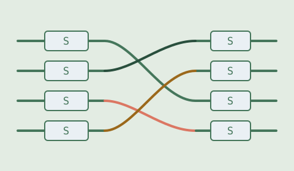

Primitives design
Our designs include the GIFT and LED block ciphers.
ISO/IEC 18033-7 specifies variants of the SKINNY and Deoxys-TBC tweakable block ciphers. The PHOTON hash family is specified in ISO/IEC 29192-5.
Deoxys-II was the CAESAR final portfolio’s first choice for defense in depth.